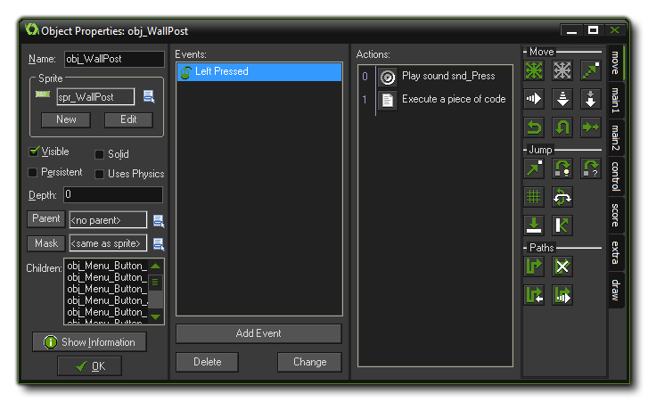
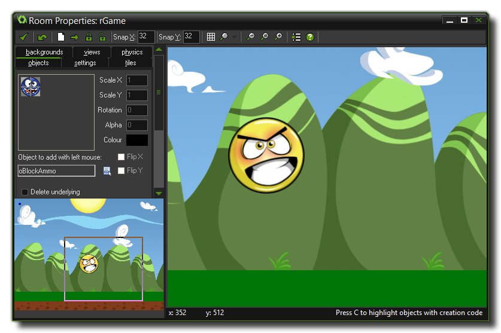

GameMaker: Studio 概述
本篇文章介绍了GMS的几个最重要的概念，掌握了他们，你才能尽快开始上手制作游戏。
基本理念
在使用GMS创作游戏之前，请先了解这款软件的基本理念。GMS制作的游戏，都是在称为“房间”的地方进行的。这些房间都是2D平面的空间，不过也可以包含3D的图像，这取决于你（游戏设计者）。在房间里面，你要放置一个或者多个“物体”。这些“物体”可以是墙、球、玩家控制的主角、敌人、也可以是其他各种你认为游戏中应该出现的东西！有些物体，如墙壁，本身不会动，而另一些物体，如主角，可以移动、可以接收玩家通过键盘、鼠标、手柄发出的指令。比如，当主角遇到敌人时，可能被杀死，也可能杀死敌人并获得分数。所以，“物体” 是GMS游戏中最重要的元素，我们还将进一步讲到它。
物体、房间
首先，当物体被放置在房间中时，被称为一个“实例”，他们需要若干图像，来表现出他们的样子。这些图像被称为“精灵图像”。一个精灵图像通常不是一个单张图片，而是多幅连贯的图像，当他们一张接一张显示在屏幕上时，就能产生动画效果，如角色行走、或者球滚动、或者敌人爆炸，等等。在进行游戏时，一个实例的精灵图像可以发生变化，这样当一个角色向左走和向右走，显示出的样子可以是不一样的。 你可以在GMS中创建精灵图像，或者导入图片文件，并在GMS强大的精灵编辑器中进行编辑。一个典型的精灵图像看起来就像下面这样：
对于“有行为”的物体，我们需要对其赋予“动作”，同时还应告诉这些物体在何种条件下触发这些行为。这些满足触发的条件在GMS里又被称为“事件”。一个“事件”指的是一个特定的时机，在这个时机中我们可以赋予一个物体若干“动作”，这样，这些“动作”当且仅当事件触发时才会发生。在GMS中有非常多种类型的事件，也有非常多种类型的动作可供你（开发者）选择。比如，有一种事件叫做“创建事件”，按照字面意思，你可能认为这个事件是在物体创建的时候触发。然而，这是错的！物体是不会被创建的，被创建的是物体的一个“实例”。“实例”类似于物体的一份拷贝，与物体有完全相同的事件和动作。你可以把物体想象成“模板”，而实例都是这些模板的副本。例如，为了让一个物体——“球”在创建实例时运动起来，就应该在物体“球”的创建事件中添加运动动作。
另一个例子是“碰撞事件”。碰撞事件指的是两个实例在房间中相碰时触发的事件。在这个事件中，你可以添加让实例停止的动作，或者反向运动的动作，或者若干个其他任何动作，比如“播放一个音效”或者“加分”，还有更多的事件，比如“键盘事件”（玩家按下键时触发）、“鼠标事件”（按下鼠标键时触发），以及“绘制事件”（在这个事件中我们可以告诉每个物体应该在房间中绘制什么）。还有更多的事件，我们将在本帮助文档中逐个进行介绍。
一旦你为物体指定了事件和动作，就应该设计“房间”了。物体（的实例）都是放在房间里面的。房间可以用来设计游戏关卡、显示游戏信息、也可以显示游戏选单。有专门的动作用于在房间之间转换，你可以创建“按钮”物体，当玩家点击时，就从一个房间跳转到另一个房间。注意：如果你没有创建任何房间，GMS将无法运行游戏。如何创建房间？GMS有一个完整的房间编辑器，你可以用它来创建和设计房间，决定一个房间的外观、行为等各个方面。比如，你可以为一个房间指定“背景”。背景既可以是纯色，也可以是一张图片。背景可以通过背景编辑器创建，也可以通过导入图片素材来创建。背景也能做很多事情，但在目前这个初学者阶段，你可以仅仅把背景认为是让房间更好看的装饰品。接下来，你可以在创建好的房间中放置一个或多个物体的实例。比如，你想在房间中放置一大片墙的区域，那么你就创建一个“墙”的物体，然后放置很多个“墙”的实例在房间中。放置敌人的方法也可以一样操作！制作一个“敌人”物体，放置多个“敌人”的实例在房间中，在一个关卡中，可以只设计不多的几种“敌人”物体，然后放置很多个“敌人”的实力。房间编辑器看起来大概是下面这样： 
一旦你完成了房间的设计，你就可以运行游戏了。第一个房间通常用来放置选关界面（关卡列表），游戏运行的时候首先显示的就是第一个房间。现在你所放置的实例已被赋予了生命，因为你为他们的“创建时事件”指定了动作；这些实例将产生互动，因为你为物体的“碰撞事件”指定了动作。他们还将对玩家的指令产生反应，因为你为“键盘事件”或者“鼠标事件”指定了动作。
以上涵盖了GMS的两个最重要的方面，同时，还有几个概念也很重要！所有这些概念，在GMS中被称为“资源”，在GMS界面的左侧列表中（被称为“资源树”）你可以找到它们。以下为各种资源的介绍，它们在你设计游戏时在不同的方面起到非常重要的作用。
- 精灵图像: 用来表示物体形象的图片或动画
- 声音: 背景音乐或音效
- 背景: 静止的图片，用作房间背景
- 路径: 预先设计好的路径可以让物体以指定的方式运动
- 脚本: 脚本就是一段用GML（Game Maker）写成的一段代码，这些代码都是有名字的。
- 着色器: 着色器是用着色器语言写成的两段程序，用来创造图形特效
- 字体: 你可以添加各种风格的不同字体在游戏中显示
- 时间线: 可以用来在设计在指定的时间按指定的顺序做指定的动作
- 物体: 物体对于游戏，就像一栋大楼的一砖一瓦一样重要
- 房间: 一个空间(或者关卡)物体（的实例）就放在里面
- 包含的文件: 在游戏中用到的外置文件
- 扩展: 为游戏扩展功能
- 常数: 预先设定好的常数列表
Note: To help you get familiar with GameMaker: Studio, it is strongly recommended that you follow some of the beginner tutorials that come bundled with the program. These can be found from the Tutorials tab on the start-up splash screen, and cover all basic functionality.
© Copyright YoYo Games Ltd. 2014 All Rights Reserved